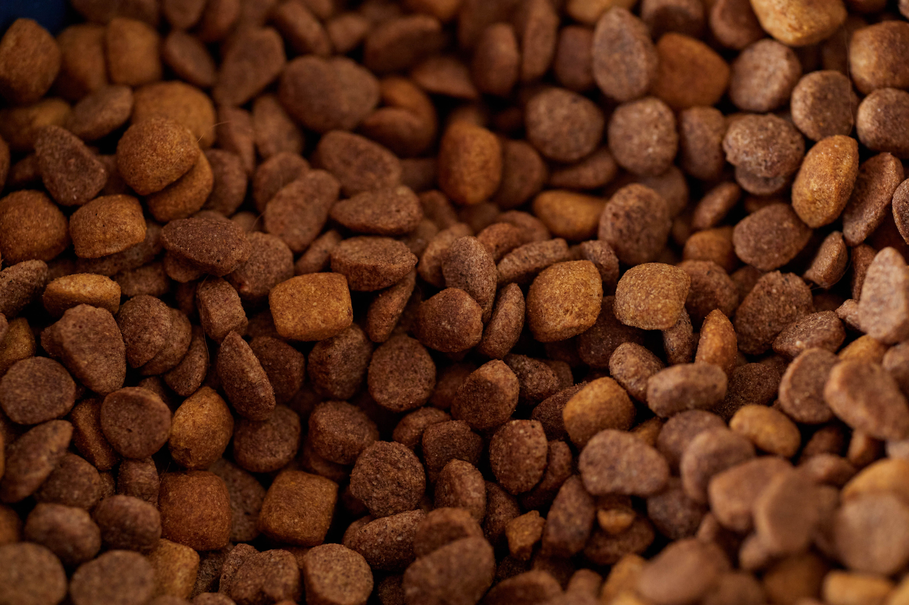
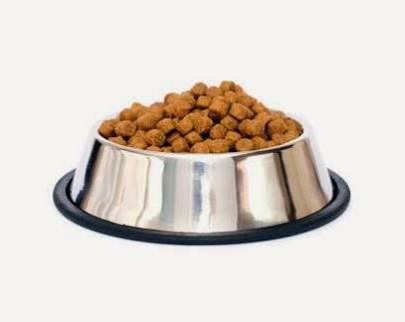
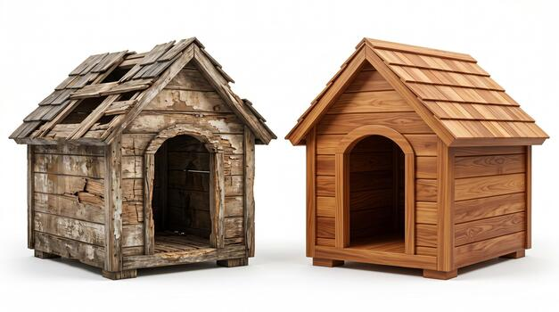
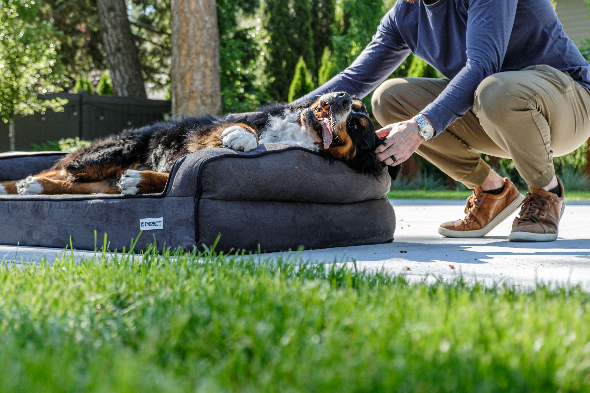

Ração
Ração de qualquer marca, para filhotes ou adultos — é o item mais usado no dia a dia do abrigo.
Cada cachorro aqui já passou por momentos difíceis e está pronto pra ganhar uma família. Dá uma olhada em quem está esperando por você.
Cada cachorrinho tem uma necessidade diferente, mas existem várias formas de ajudar o abrigo como um todo. Você pode contribuir com um Pix ou doar itens específicos — qualquer ajuda faz diferença no dia a dia deles.
É o jeito mais rápido de ajudar: o valor vai direto para ração, remédio e os outros custos do abrigo.
Depois de copiar, é só colar no app do seu banco na opção Pix.
Esses são os itens que mais fazem falta no dia a dia do abrigo.

Ração de qualquer marca, para filhotes ou adultos — é o item mais usado no dia a dia do abrigo.

Recipientes resistentes ajudam a manter a alimentação organizada e higiênica para todos os cachorros.

Um abrigo do sol e da chuva para os cachorros que ainda esperam por um lar definitivo.

Um cantinho confortável para descansar faz diferença, especialmente para os cachorros mais idosos.
Converse em tempo real com o abrigo pelo chat do site. É mais rápido que e-mail e você já sai daqui com a resposta.
Clique no botão abaixo (ou no balão que aparece no canto da tela) para abrir o chat.
Assim que alguém do abrigo estiver online, a conversa começa na hora.
Preencha o formulário contando o que você gostaria e a gente responde por e-mail o mais rápido que der!